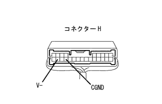
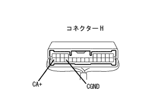
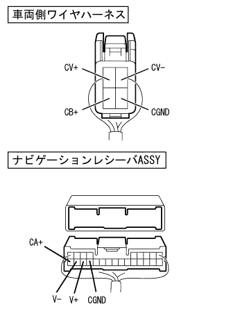
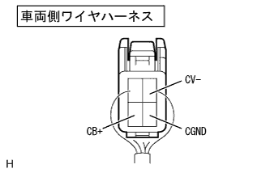
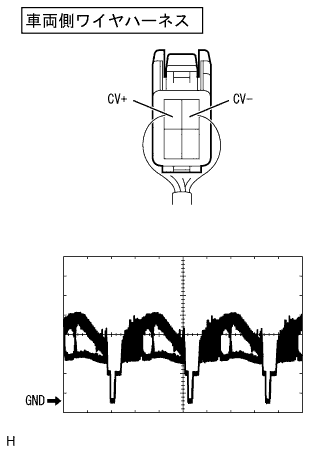

バックガイドモニターシステム シフトレバーがRレンジの時にバックガイドモニター映像を出画しない(画面は黒画面) |
 参照)参照)参照)
参照)参照)参照)| 手順1 | サービス検査（AVN） |
サービス検査
ダイアグノーシスを起動し、個別ダイアグAVNで“ダイアグコード5C-40”の表示があるか点検する。(要領は参照)
| 点検結果 | 手順 |
|---|---|
| 表示なし | A |
| 表示あり | B |
|
| ||||
| A | |
| 手順2 | ナビゲーション レシーバASSY点検（CA+、CGND、V-） |
導通点検
|  |
SST(トヨタエレクトリカルテスター)を使用して、車両側ワイヤハーネスのコネクターを接続した状態で、コネクターの裏側からCGND、V-端子とボデーアース間の導通を点検する。(端子配列は参照)
| 測定端子(端子記号) | 測定条件 | 基準 |
|---|---|---|
| H21(CGND)←→ボデーアース | 常時 | 導通あり |
| H23(V-)←→ボデーアース | 常時 | 導通あり |
電圧点検
|  |
SST(トヨタエレクトリカルテスター)を使用して、車両側ワイヤハーネスのコネクターを接続した状態で、コネクターの裏側から各端子間の電圧を点検する。(端子配列は参照)
| 測定端子(端子番号) | 測定条件 | 基準 |
|---|---|---|
| CA+(H24)←→CGND(H21) | IGスイッチON、シフトレバーRレンジ | 5.7-6.5V |
|
| ||||
| OK | |
| 手順3 | ワイヤハーネスおよびコネクター点検（ナビゲーションレシーバASSY - テレビジョンカメラASSY間） |
参照点検前準備
テレビジョンカメラASSYおよびナビゲーションレシーバASSYのコネクターHを切り離す。
|  |
導通点検
SST(トヨタエレクトリカルテスター)を使用してコネクターを切り離した状態で、テレビジョンカメラASSYおよびナビゲーションレシーバASSYの車両側ワイヤハーネス間の導通を点検する。(回路図は参照)
| 測定端子(端子番号) (テレビジョンカメラASSY←→ナビゲーションレシーバASSY) | 基準 |
|---|---|
| CV-(1)←→V-(H23) | 導通あり |
| CV+(2)←→V+(H22) | 導通あり |
| CGND(3)←→CGND(H21) | 導通あり |
| CB+(4)←→CA+(H24) | 導通あり |
|
| ||||
| OK | |
| 手順4 | テレビジョン カメラASSY点検（CB+、CGND、CV-） |
|  |
導通点検
SST(トヨタエレクトリカルテスター)を使用して、車両側ワイヤハーネスのコネクターを接続した状態で、車両ワイヤハーネスのコネクターの裏側からCB+端子←→CGND端子間の導通とCGND·CV-とボデーアース間の導通を点検する。(端子配列は参照)
| 測定端子(端子番号) | 測定条件 | 基準 |
|---|---|---|
| CB+(4)←→CGND(3) | 常時 | 導通あり |
| CGND(3)←→ボデーアース | 常時 | 導通あり |
| CV-(1)←→ボデーアース | 常時 | 導通あり |
|
| ||||
| OK | |
| 手順5 | テレビジョン カメラASSY点検（CV+、CV-） |
波形点検
|  |
オシロスコープを使用して、車両側ワイヤハーネスのコネクターを接続した状態で、車両ワイヤハーネスのコネクターの裏側から波形を点検する。(端子配列は参照)
| 項目 | 内容 |
|---|---|
| 測定端子 | CV+(2)+←→CV-(1) |
| 計器セット | 0.2V/DIV、0.2μS/DIV |
| 測定条件 | IGスイッチON、シフトレバーRレンジ |
|
| ||||
| OK | ||
| ||